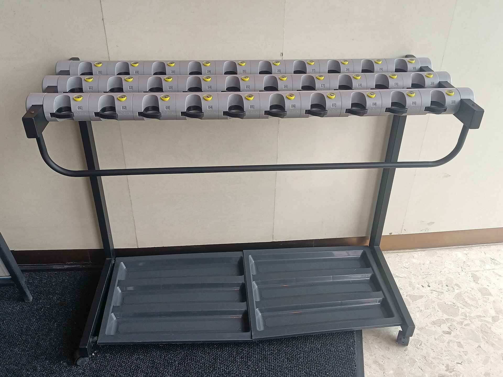
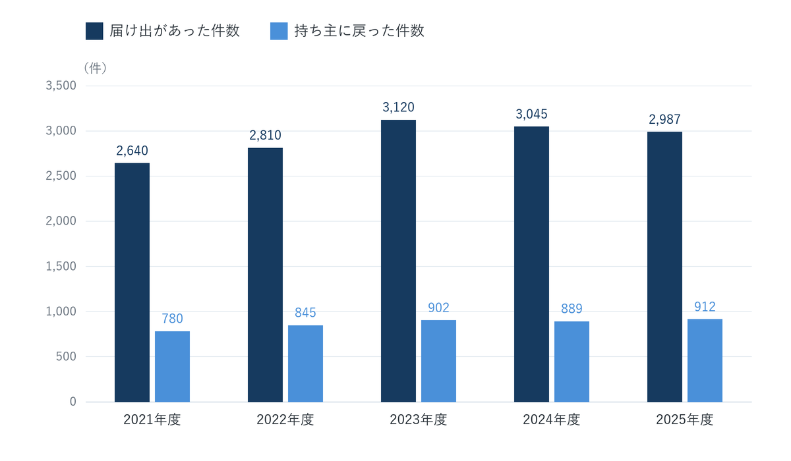

これは書き方の見本です。 実在の取材にもとづくものではなく、ページの構成と各パートの分量を示すために作った記入例です。 人名はすべて「○○」にしてあります。本記・雑観・グラフィック・解説・談話がどう並び、 誰の署名がどこに入るかを確かめてください。 写真もダミー（Wikimedia Commons の CC0 画像）です。みなさんは必ず自分たちで撮った写真を使ってください。
落とし物は年3000件、傘とイヤホンが半分 学生課の棚がいっぱいになる日
拾われてから警察に届くまでの1週間を追った

八王子キャンパスの学生課には、年に約3000件の落とし物が届く。もっとも多いのは傘とイヤホンで、全体の半分を占める。持ち主が現れるのは3割ほど。残りは1週間ほどで警察署に届けられる。棚がいっぱいになる季節と、その後ろにある決まりを取材した。
1日に8件、多い日は20件が届く
帝京大学八王子キャンパスの学生課に2025年度に届いた落とし物は2987件だった。1日あたり約8件、雨が降った翌日には20件を超えることもある。学生課の○○○○さんによると、内訳は傘が最も多く、次いでイヤホン、水筒、学生証と続く。
「傘とイヤホンだけで、だいたい半分です」と○○さんは話す。特に梅雨の時期と、11月に入って急に冷え込んだ日の翌朝に集中するという。
届いた落とし物は品目と拾得場所を台帳に記録し、棚に並べる。学生証や財布など持ち主が特定できるものは、大学のメールアドレスに連絡する。それ以外は、学生が窓口に問い合わせてくるのを待つしかない。
2025年度に持ち主のもとへ戻ったのは912件で、全体の31%にとどまった。残りは学生課で1週間ほど預かったのち、まとめて警察署に届けている。
（文・○○○○）
ビニール傘の森と、名前の消えた水筒
窓口の奥のドアを開けると、傘だった。壁一面にビニール傘が立てかけられ、床が見えない。数えようとしてあきらめた。
その隣の棚には、透明な袋に入った小物が並ぶ。イヤホンのケース、鍵、腕時計。ひとつずつ番号の書かれた紙が貼ってある。棚の一番下に、油性ペンで書かれた名前が半分消えた水筒があった。「これは先週の金曜日に届いたものです」と○○さんが言う。持ち主が来なければ、週明けには警察署に届ける箱に移る。
「箱に詰めて送り出すのが、いちばん気が重い作業です」。そう言いながら、○○さんは水筒を元の場所に戻した。
（文・○○○○）

1週間で警察に届けるのはなぜか
落とし物の扱いは遺失物法で決まっている。大学のような施設で拾われた物は、まず施設の管理者に渡される。管理者は、持ち主に返せなければ、速やかに警察署長に提出しなければならない（第13条第1項）。1週間を過ぎると、謝礼（報労金）を受け取る権利などを失う（第34条第4号）。
警察が拾得物を公告して3カ月たっても持ち主が分からなければ、拾った人のものになる（民法第240条）。
（文・○○○○）
取材○○○○、○○○○、○○○○、○○○○
文○○○○、○○○○、○○○○
撮影○○○○
グラフィック○○○○
取材源・参考資料
- 帝京大学八王子キャンパス学生課・○○○○さん（2026年11月5日、1号館学生課窓口で取材）
- 帝京大学八王子キャンパス学生課「落とし物台帳」2021〜2025年度分（2026年11月5日閲覧）
- 遺失物法（平成18年法律第73号）第4条第2項・第13条第1項・第34条第4号、民法第240条（e-Gov法令検索で2026年11月25日に確認）